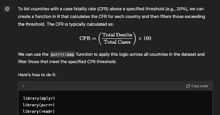

Coronavirus Cases and Deaths: Looking at Covid-19 Data with R
Introduction
The coronavirus pandemic severely impacted the lives of citizens around the globe. This essay seeks to explore the extent to which quantitative data attests to that statement, through data-wrangling processes that culminate in a series of visualisations to make sense of the data (Wickham et al. 2019). In this essay, my analyses of a dataset on Covid-19 cases and deaths reveals countries around the world generally experienced similar infection trends across time, but with varying case fertility rates (CFR). It should be noted that case increase trends tended to be more similar than not across all continents, showing that Covid-19 was indeed a pandemic that affected countries across borders, regardless of income level or continent.
Exploring and Contextualising Data
# Setup rm(list =ls()) # Clears environmentif (!require("pacman")) { # If pacman is not yet installed, it will be installedinstall.packages("pacman")}
Loading required package: pacman
# Load packagespacman::p_load( tidyverse, # tidyverse packages glue, # to combine strings and objects ggplot2, # used in data visualisation skimr) # skim data# Import datadata <-read.csv("https://github.com/owid/covid-19-data/raw/refs/heads/master/public/data/cases_deaths/full_data.csv", header =TRUE)# Skim data to find descriptive statistics skim(data)
Data summary
Name
data
Number of rows
411804
Number of columns
10
_______________________
Column type frequency:
character
2
numeric
8
________________________
Group variables
None
Variable type: character
skim_variable
n_missing
complete_rate
min
max
empty
n_unique
whitespace
date
0
1
10
10
0
1674
0
location
0
1
4
32
0
246
0
Variable type: numeric
skim_variable
n_missing
complete_rate
mean
sd
p0
p25
p50
p75
p100
hist
new_cases
1645
1.00
8017.36
229664.87
0
0.00
0
0
44236227
▇▁▁▁▁
new_deaths
1196
1.00
71.85
1368.32
0
0.00
0
0
103719
▇▁▁▁▁
total_cases
0
1.00
7365292.35
44775816.77
0
6280.75
63653
758272
775866783
▇▁▁▁▁
total_deaths
0
1.00
81259.57
441190.14
0
43.00
799
9574
7057132
▇▁▁▁▁
weekly_cases
2875
0.99
56287.18
606312.78
0
0.00
84
2193
44236227
▇▁▁▁▁
weekly_deaths
2426
0.99
504.43
3595.46
0
0.00
0
22
103719
▇▁▁▁▁
biweekly_cases
4597
0.99
113044.30
1167969.71
0
0.00
183
4507
71968927
▇▁▁▁▁
biweekly_deaths
4148
0.99
1013.05
7162.04
0
0.00
1
45
204689
▇▁▁▁▁
I chose the “Covid-19 Cases and Deaths Database” dataset to conduct my analysis. This dataset, which has daily observations for the total, weekly and biweekly cases and deaths for all countries, is ideal for further data-wrangling to obtain other meaningful statistics to assess countries’ performances in the pandemic. Moreover, investigating statistics from the Covid-19 pandemic would be helpful in predicting how countries could possibly fare in the future, as has been reflected in past research (Eltoukhy et al., 2020).
With 411,804 observations across 10 variables in the dataset, it contains day-by-day observations of Covid-19-related statistics for every country and continent. While there were some missing observations (all variables were at least 99% complete), it is noteworthy that some variables may not have been suitable for data analysis. In particular, the means of the variables for the number of new cases and deaths per day (“new_cases” and “new_deaths” respectively) indicated that on average, there were 8,017 new cases and 71.9 new deaths worldwide daily. This was extremely peculiar, as data from the World Health Organization (see Figure 1 below) revealed that even as of October 2024, where official Covid-19 data may not be as frequently updated, there were still on average 8,091 new cases worldwide daily. As such, 8,017 cases per day from 2019 seemed like an underestimation of the actual number of new cases daily.
Figure 1: Screenshot from World Health Organization (2023)’s dashboard on Covid-19 data.
Indeed, my suspicion was addressed by looking into the standard deviation: high variability levels were found in the data. With a standard deviation of 229,665 cases, daily new case counts could range significantly higher and/or lower than the mean. Moreover, a closer look into the data revealed that some countries’ data were not updated daily (see example below). I postulate that possible reasons are inadequate official statistics reporting procedures, or even that official data in recent years are not frequently updated, since countries are shifting towards co-existence with the virus (Tanabe, 2020; Zhang et al., 2021).
# Print data from new_cases and new_deaths variablesselected_data <- data %>%select(date,location,new_cases,new_deaths)%>%# Select relavant variablesslice(411374:411386) # Choose only a few rows to be used in the exampleprint(selected_data) # Print output
Example of data for some countries not being updated daily during the pandemic.
Similarly, a mean of 504 weekly deaths globally seemed like a far cry from the actual average number of Covid-19 deaths worldwide. This underestimation could either be due to underreporting (portraying a positive image of the Covid-19 situations in various countries) or that excess deaths were not accounted for in the data. Research from Wang and colleagues (2022) showed that an estimated 18,200,000 excess coronavirus-related deaths occurred between 2020-2021. As such, if excess deaths were reflected in the dataset, the number of weekly deaths is expected to increase significantly.
Data-wrangling
In processing and programming the data, I used Tidyverse to execute four data-wrangling operations:
# Data-wrangling 1 - Number of Cases by Continent# Printing a list of the number of cases by continent can help us to understand how many coronavirus cases were detected in each continent. This may be helpful in studying how pervasive the virus was in each continent.# Define the continentscontinents <-c("Africa","Asia","Europe","North America","Oceania","South America")# Data-wranglingtop_cases_continents <- data %>%# Create new data frame to the existing datafilter(location %in% continents) %>%# Filter out the data for the continentsgroup_by(location)%>%# Group by locationfilter(date ==max(date))%>%# Filter for the most recent data availableselect(total_cases)%>%# Select the variable for total cases in each continentarrange(desc(total_cases)) # Arrange the output in descending order
Adding missing grouping variables: `location`
# Print resulttop_cases_continents
# A tibble: 6 × 2
# Groups: location [6]
location total_cases
<chr> <int>
1 Asia 301499099
2 Europe 252916868
3 North America 124492666
4 South America 68809418
5 Oceania 15003352
6 Africa 13145380
# Data-wrangling 2 - Proportion of cases and deaths by country income# Country incomes can affect countries' abilities to access vaccines and other resources, which in turn affects how likely people are to get infected or die from the virus.# Proportion of cases by country incomecountry_income <-c("High-income countries", "Low-income countries", "Lower-middle-income countries","Upper-middle-income countries") # Define the countries by income levelproportion_cases_income <- data %>%# Create new dataframe to existing data for the proportion of cases by country incomefilter(location %in% country_income) %>%# Filter for the rows with country income groupsfilter(date ==max(date))%>%# Filter for the most recent data available group_by(date, location) %>%# Group by date and country income groupssummarise(total_cases_by_income =sum(total_cases, na.rm =TRUE)) # Create summary statistics of total cases by country income group, removing NA values
`summarise()` has grouped output by 'date'. You can override using the
`.groups` argument.
world_cases <- data %>%# Create new dataframe to existing data for the number of cases in the worldfilter(location =="World") %>%# Filter for entries with "World" as the locationselect(date, world_total_cases = total_cases) # Select the date and rename the total number of cases in the world variable to be included in the outputproportion_cases <- proportion_cases_income %>%# Create new dataframe to calculate the proportion of cases by income group against the number of global casesleft_join(world_cases, by ="date") %>%# Join the data for income group cases with total cases in the world by datemutate(proportion = total_cases_by_income / world_total_cases) # Calculate proportion of cases by income groupproportion_deaths_income <- data %>%# Create new dataframe to existing data for the proportion of deaths by country incomefilter(location %in% country_income) %>%# Filter for the rows with country income groupsfilter(date ==max(date))%>%# Filter for the most recent data availablegroup_by(date, location) %>%# Group by date and country income groupssummarise(total_deaths_by_income =sum(total_deaths, na.rm =TRUE)) # Create summary statistics of total deaths by country income group, removing NA values
`summarise()` has grouped output by 'date'. You can override using the
`.groups` argument.
world_deaths <- data %>%# Create new dataframe to existing data for the number of Covid-19 deaths in the worldfilter(location =="World") %>%# Filter for entries with "World" as the locationselect(date, world_total_deaths = total_deaths) # Select the date and rename the total number of Covid-19 deaths in the world variable to be included in the outputproportion_deaths <- proportion_deaths_income %>%# Create new dataframe to calculate the proportion of Covid-19 deaths by income group against the number of global Covid-19 deathsleft_join(world_deaths, by ="date") %>%# Join the data for income group deaths with total Covid-19 deaths in the world by datemutate(proportion = total_deaths_by_income / world_total_deaths) # Calculate proportion of Covid-19 deaths by income group# Print resultsproportion_cases
# Data-wrangling 3 - Rate of weekly case and death increase# Calculating the rate of case and death increase rates in each location can help us understand how good or bad the Covid-19 situation was in each location at any given date.data <- data %>%# Store the results of these data-wrangling in the original dataframearrange(location,date)%>%# Arrange the data by location and dategroup_by(location)%>%# Group data by locationmutate(weekly_case_increase = ((weekly_cases -lag(weekly_cases)) /lag(weekly_cases)) *100, # Calculate the weekly case increase rate of all locations as a percentageweekly_death_increase = ((weekly_deaths -lag(weekly_deaths)) /lag(weekly_deaths)) *100) # Calculate the weekly death increase rate of all locations as a percentagedata %>%select(date,weekly_case_increase,weekly_death_increase) # Select the date, weekly case increase rate and weekly death increase rate variables to be displayed in the output
Adding missing grouping variables: `location`
# A tibble: 411,804 × 4
# Groups: location [246]
location date weekly_case_increase weekly_death_increase
<chr> <chr> <dbl> <dbl>
1 Afghanistan 2020-01-05 NA NA
2 Afghanistan 2020-01-06 NA NA
3 Afghanistan 2020-01-07 NA NA
4 Afghanistan 2020-01-08 NA NA
5 Afghanistan 2020-01-09 NA NA
6 Afghanistan 2020-01-10 NA NA
7 Afghanistan 2020-01-11 NaN NaN
8 Afghanistan 2020-01-12 NaN NaN
9 Afghanistan 2020-01-13 NaN NaN
10 Afghanistan 2020-01-14 NaN NaN
# ℹ 411,794 more rows
# Data-wrangling 4 - Case Fatality Rate (CFR)# The case fatality rate, which is measured in terms of total deaths over the total number of cases, can help us understand how fatal the coronavirus is in each location around the world.data <- data %>%# Store the results of these data-wrangling in the original dataframearrange(date)%>%# Arrange the existing data by dategroup_by(location)%>%# Group by location, such that countries would be in alphabetical ordermutate(cfr = (total_deaths/total_cases) *100) # Calculate the CFR as a percentagedata %>%select(date,total_deaths,total_cases,cfr) # Select the date, total deaths, total cases and CFR variables to be displayed in the output
Adding missing grouping variables: `location`
# A tibble: 411,804 × 5
# Groups: location [246]
location date total_deaths total_cases cfr
<chr> <chr> <int> <int> <dbl>
1 Afghanistan 2020-01-05 0 0 NaN
2 Africa 2020-01-05 0 0 NaN
3 Albania 2020-01-05 0 0 NaN
4 Algeria 2020-01-05 0 0 NaN
5 American Samoa 2020-01-05 0 0 NaN
6 Andorra 2020-01-05 0 0 NaN
7 Angola 2020-01-05 0 0 NaN
8 Anguilla 2020-01-05 0 0 NaN
9 Antigua and Barbuda 2020-01-05 0 0 NaN
10 Argentina 2020-01-05 0 0 NaN
# ℹ 411,794 more rows
Building on the code that I had written to determine the Case Fatality Rate (CFR) for each country, I created a function to generate a list of countries above a specified CFR, as of the latest datapoint available in the dataset.
This function generates a list of countries for a CFR threshold specified. With this function, researchers can easily obtain a list that reflects the fatality rates in different countries. It is a helpful tool that eliminates the need for researchers having to scroll through a long list of case fatality rates for all countries and instead filters and presents the information that the researcher wishes to obtain.
# Function to generate a list of countries above a given case fatality rate (CFR)countries_cfr_above_threshold <-function(data, cfr_threshold) {# Obtain the most recent CFR for each country data %>%group_by(location) %>%# Group data by location, in alphabetical orderfilter(!is.na(total_cases) &!is.na(total_deaths)) %>%# Filter for total cases and total deaths, removing for NA valuesslice_tail(n =1) %>%# Get the most recent CFR by taking the last row for each countrymutate(cfr = (total_deaths / total_cases) *100) %>%# Calculate CFR as a percentagefilter(cfr > cfr_threshold) %>%# Filter countries with CFR above the specified thresholdselect(location, total_cases, total_deaths, date,cfr) %>%# Select variables to be displayed in outputarrange(desc(cfr)) # Arrange output in descending order (highest CFR first)}# List countries with CFR above x% - change x by changing the number below (here, the percentage is 2%)countries_cfr_above_x <-countries_cfr_above_threshold(data, 2)# Print resultcountries_cfr_above_x
To provide a visual explanation of the data, I used ggplot2 derived from the refined datasets in the previous section of the report.
For the first visualisation, I did a point plot with a best fit curve for each country income group as it can present the data in a clear, de-cluttered manner. The graph reveals that the CFR was higher in high-income countries between 2020-2021, and then became lower than low-income countries from mid-2021 onwards. This could possibly be attributed to the proliferation of Covid-19 vaccines. Since high-income countries disproportionately had greater access to these vaccines than low-income countries (Duan et al., 2021), it is expected that the CFR in high-income countries decreased over time.
# Data Visualisation 1 - Case fatality rate over time in low-income countries versus high-income countriescfr_over_time <- data %>%# Store the results of the data-wrangling in the original dataframefilter(location %in%c("Low-income countries", "High-income countries"))%>%# Filter out the data points for low-income countries and high-income countriesgroup_by(location, date) # Group these data points by location (low or high-income countries) and datecfr_over_time %>%ggplot(aes(x =as.Date(date), y = cfr, color = location)) +# Graph with x-variable being date (time) and y-variable being the case fatality rate. The countries' income group is differentiated by two colours in the graph.geom_point(alpha=0.1) +# Point plot, with transparency being 0.1 so that the line of best fit can be better seen.geom_smooth( aes(color=location), size =0.7)+# Curve of best fit, made thinner to see the distinctions between both lines in the graphlabs( # Labels for graphtitle ="Case Fatality Rate (CFR) in Low-Income vs High-Income Countries",x ="Year",y ="Case Fatality Rate (%)",color ="Country Income Group" )
Warning: Using `size` aesthetic for lines was deprecated in ggplot2 3.4.0.
ℹ Please use `linewidth` instead.
`geom_smooth()` using method = 'gam' and formula = 'y ~ s(x, bs = "cs")'
Warning: Removed 56 rows containing non-finite outside the scale range
(`stat_smooth()`).
Warning: Removed 56 rows containing missing values or values outside the scale range
(`geom_point()`).
From the case increase rate obtained earlier, I did a visualisation for the case increase rate specific to the UK, as including more countries would have made the graph over-cluttered. I chose a line graph for this plot, as it would have made the fluctuations seen in the graph more obvious. As such, the rate of increase/decrease could be interpreted easily.
# Data Visualisation 2 - Weekly Case Increase Rate in the UKweekly_case_increase_we <- data %>%# Store the results of the data-wrangling in the original dataframefilter(location %in%c("United Kingdom")) %>%# Filter for a specific country, in this example I used the UKgroup_by(location,date) # Group data by location (the UK) and date, in ascending orderweekly_case_increase_we %>%ggplot(aes(x=as.Date(date), y=weekly_case_increase)) +# Graph with x-variable being date (time), y-variable being weekly case increase. geom_line()+# Line graph to illustrate the fluctuations in case increase/decrease over time.labs( # Labels for graphtitle ="Weekly Case Increase Rate in the United Kingdom",x ="Year",y ="Weekly Case Increase Rate (%)" )
Warning: Removed 28 rows containing missing values or values outside the scale range
(`geom_line()`).
Here, I also chose a line graph to represent the number of cases over time in each continent. Asia and Europe have significantly higher case numbers than the rest of the world. Where research by McKay et al. (2024) has shown that there is evidence to suggest that Africa experienced levels of infection similar to the rest of the world, I believe that the low numbers of African Covid-19 cases reflected may be due to underreporting or inadequate organisational structures to accurately reflect the Covid-19 situation in Africa.
# Data Visualisation 3 - Number of Cases across various continentstotal_cases_continents <- data %>%# Store the results of the data-wrangling in the original dataframefilter(location %in% continents) %>%# Filter for continents, as used abovegroup_by(location,date) # Group data by the continents, and date (time)total_cases_continents %>%ggplot(aes(x=as.Date(date), y=total_cases, color=location)) +# Graph with x-variable being date (time), y-variable being the total cases in each continent. The colour of each line will differentiate the continents.geom_line()+# Line graph so that the trajectory of cases is clearlabs( # Labels for graphtitle ="Number of Covid-19 cases across time in various continents",x ="Year",y ="Number of Covid-19 cases",color ="Continent" ) +scale_y_continuous(labels = scales::comma) # Changes scentific mathematical numbers in the y-axis to readable numeric format
I wrote a function to display visualisations of weekly case increase rates in each continent from June 2020. This function is necessary if one wishes to compare how Covid-19 cases increased in each continent over time, to find any similarities and/or differences in the trend. The function revealed that while there were minor differences across the continents, the general infection trend was largely similar - testament to how different Covid-19 strains reached the continents one after another, causing a surge in infections.
To write this function, I first filtered a dataframe for the continents (including World statistics). Then, I created the function, which would generate line graphs of the weekly case infection rates for each continent. I then mapped the function to each continent, generating one plot per continent and displayed the graphs in two columns for easier reference.
# Function - Data visualisations for weekly case increase rate in each continentfiltered_df <- data %>%filter(location %in%c("Africa", "Asia","Europe","North America","Oceania","South America","World")) # Dataframe to filter the continents and World statisticsstart_date <-as.Date("2020-06-01") # Define the start date as 1 June 2020create_point_plot <-function(location) { # Define function that creates a point plot for each continent's weekly case increase rate filtered_df %>%filter(location == location, date >= start_date)%>%# Filter data for the locations listed above and from the start date listed aboveggplot(aes(x =as.Date(date), y = weekly_case_increase)) +# Graph with x-variable as the date (time, from 1 June 2020 onwards), and y-variable as the rate of weekly case increasegeom_line() +# Creates a line graphgeom_smooth(color ="blue") +# Add curve of best fit to determine the trendlabs(title =glue("Weekly Case Increase Trend in {location}"),x ="Year",y ="Weekly Case Increase (%)" )}plots_list <-map(unique(filtered_df$location), create_point_plot) # Maps the function to each continent, generating separate plots for each continentplots_grid <- gridExtra::grid.arrange(grobs = plots_list, ncol =2) # Displays the graphs in two columns, making them easier to compare
`geom_smooth()` using method = 'gam' and formula = 'y ~ s(x, bs = "cs")'
`geom_smooth()` using method = 'gam' and formula = 'y ~ s(x, bs = "cs")'
`geom_smooth()` using method = 'gam' and formula = 'y ~ s(x, bs = "cs")'
`geom_smooth()` using method = 'gam' and formula = 'y ~ s(x, bs = "cs")'
`geom_smooth()` using method = 'gam' and formula = 'y ~ s(x, bs = "cs")'
`geom_smooth()` using method = 'gam' and formula = 'y ~ s(x, bs = "cs")'
`geom_smooth()` using method = 'gam' and formula = 'y ~ s(x, bs = "cs")'
Critical Engagement with AI
I used generative AI chatbots like ChatGPT to assist me in fine-tuning my code. Through this engagement, I noticed how ChatGPT, while being an impressive tool in providing me clarity to any doubts I may have over the mistakes I made, is also a tool that may not accurately complete tasks.
AI was extremely helpful in providing explanations to any error messages that I received while running the code I have written. For example, I was unsure why my code was wrong while writing a function, as I had already defined ‘continent’ in earlier parts of the code. Putting this into ChatGPT and asking why it was wrong gave me clarity on where my code went wrong and how to fix it (see Figure 2 below). Furthermore, AI could interpret the machine-like error messages to me in a human fashion. This powerful tool helped me to better understand how I could edit my code. ChatGPT was extremely helpful in pointing out any oversights I made while coding. Learning from this mistake, I was careful of such mistakes as I continued with the assignment. Hence, AI is a useful tool in illustrating my mistakes and teaching me how to amend my code to make it work.
Figure 2: Screenshot from ChatGPT illustrating where my code went wrong.
However, insofar as AI was helpful in pointing out my mistakes, I learnt that it still may give false or misleading suggestions, especially in the context of coding. In the process of fixing mistakes from my code in the case fatality rates function (see above), I asked ChatGPT if purrr::map could be used. ChatGPT then generated a code with purrr::map in the function (see: Figure 3).

Figure 3: Screenshot from ChatGPT with code it generated teaching me how to use the purrr::map function to write my function.
Yet, upon closer inspection of the code it had generated, I found no trace of purrr::map being used. I further questioned if it was used, to which ChatGPT admitted that the result did not usepurrr::map as dplyr operations were sufficient to code the function I wanted (see: Figure 4).
Figure 4: Screenshot from ChatGPT, where it admits that purrr::map was not used in the code it generated.
This experience with ChatGPT made me realise how important it is not to wholeheartedly trust the results generated by AI, as AI has the capacity to make mistakes as well. The use of AI, especially in the context of coding, still requires prerequisite knowledge of the language. In this example, if I had no knowledge of purrr::map and simply used whatever ChatGPT had generated, I would have made a serious mistake of thinking that purrr::map was actually applied to the function. It is imperative, hence, that usage of AI is carried out carefully – that all results generated by AI are checked and verified by the human behind the computer.
Conclusion
In this essay, I analysed a dataset of Covid-19 cases and deaths across the world, and illustrated these data-wrangling and data visualisation processes. I found that Covid-19, a pervasive disease had indeed affected all places around the globe. Even though the visualisations reveal that Covid-19 affected poorer regions worse than richer regions globally, I believe that the actual extent to which poorer regions were impacted by Covid-19 may not be accurately reflected in this dataset, as official statistics may not be truly reflective of the actual cases and deaths that occur in poorer countries. In my interactions with AI, I learnt how it can be a helpful tool to generate solutions to coding problems, but still must be used with caution and awareness of coding. The solutions generated by AI must be checked by humans before they are adopted, to prevent false or wrong data analyses.